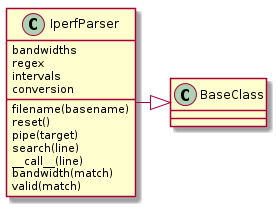

The IperfParser¶
This is the class that performs the work of extracting the data-column.
The IperfParser extracts a column from the iperf-output. Currently it only extracts bandwidth. Either it needs to be made more flexible (or a better idea might be to create a family of column extractors). The IperfParser is differentiated from the SumParser in that it re-adds adds the parallel threads and in-fills zeros for missing time-intervals.

IperfParser |
|
IperfParser.bandwidths |
|
IperfParser.regex |
|
IperfParser.intervals |
|
IperfParser.conversion |
|
IperfParser.valid |
|
IperfParser.bandwidth |
|
IperfParser.__call__ |
|
IperfParser.search |
|
IperfParser.pipe |
|
IperfParser.reset |
Properties¶
bandwidths¶
This is a generator of values from IperfParser.intervals in the sorted order of the keys (intervals). It is based on the premise that IperfParser.intervals is a dictionary whose keys are the start of the iperf sample intervals. e.g if the samples are reported at 1-second intervals then the keys are traversed  .
.
Note
The name of the property suggests that the dictionary values are bandwidths but if this class is generalized to extract other columns then this will no longer be true and should be changed.
regex¶
This is a dictionary holding the regular expressions for the csv-format and the human-readable format. The keys should be accessed through iperfexpressions.ParserKeys (e.g. self.regex[ParserKeys.human] to get the regular expression for the human-readable iperf output).
if __name__ == '__main__':
parser = IperfParser(expected_interval=10, threads=1)
import numpy
with open('test0.iperf') as f:
for line in f:
output = parser(line)
if output is not None:
print(output)
print(numpy.median(parser.intervals.values()))